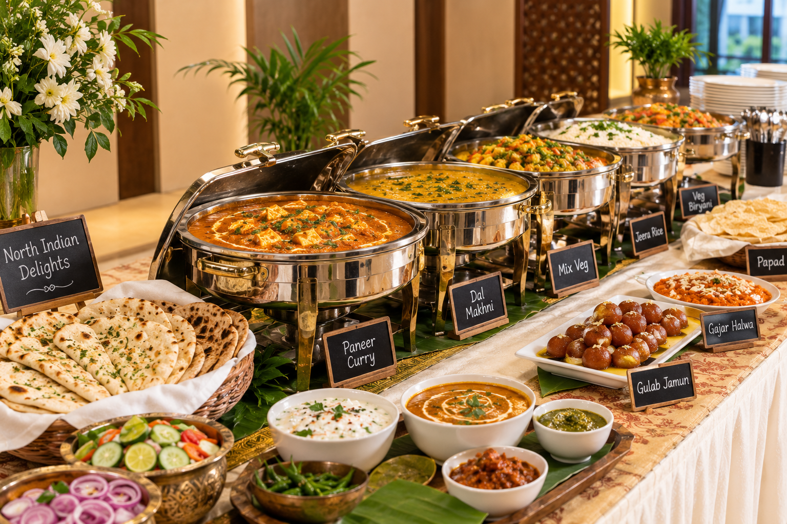

⌁ ✦ ⌁
Sri Vrinda's Catering Service
Explore Our
North Indian
Style Menu
Pure Taste. Authentic Tradition.
Book Now
8197317345
www.srivrindas.in


Pure Taste. Authentic Tradition.

(Menu is 100% customizable)
(Menu is 100% customizable)
(Menu is 100% customizable)
(Menu is 100% customizable)
(Menu is 100% customizable)